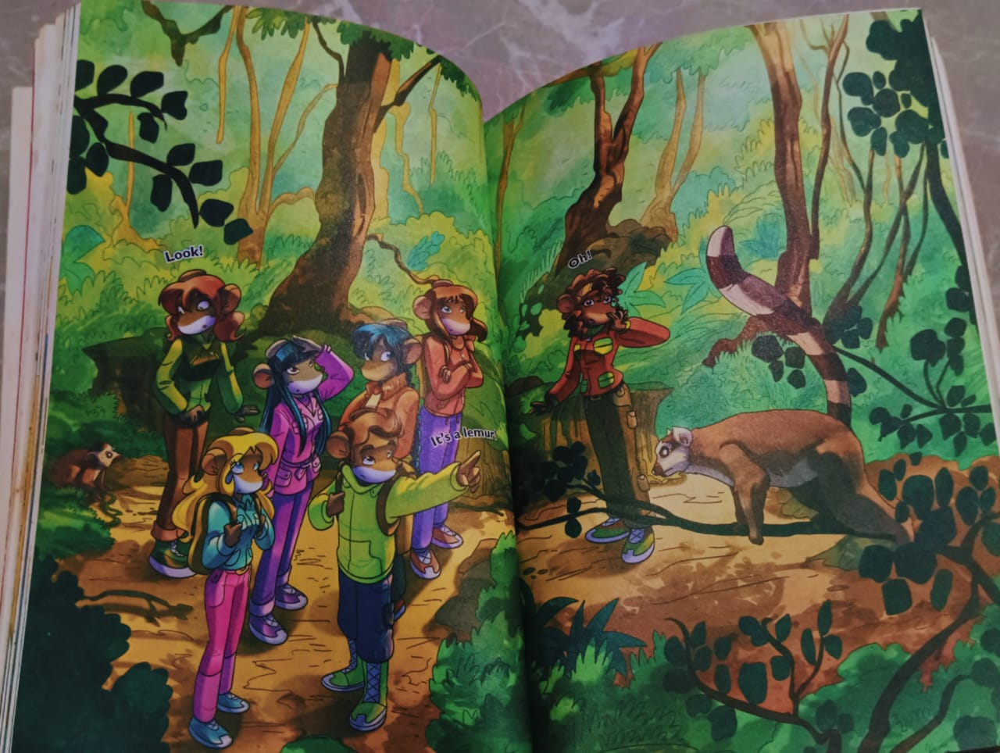
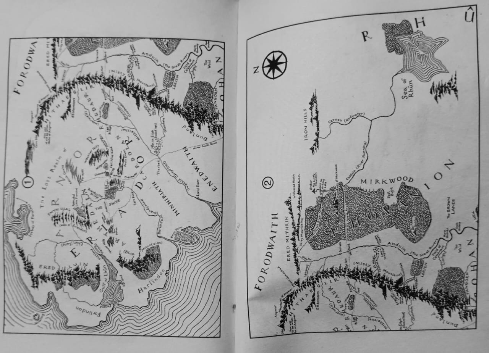
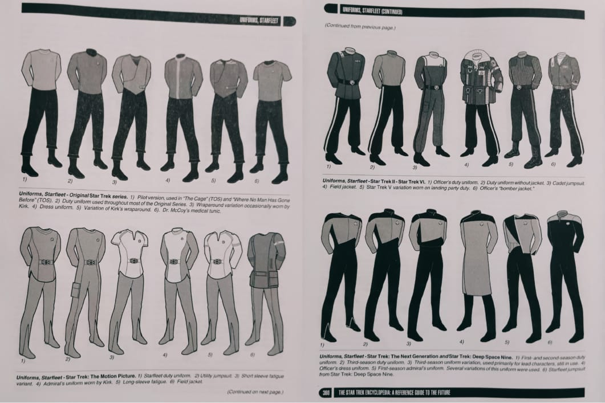
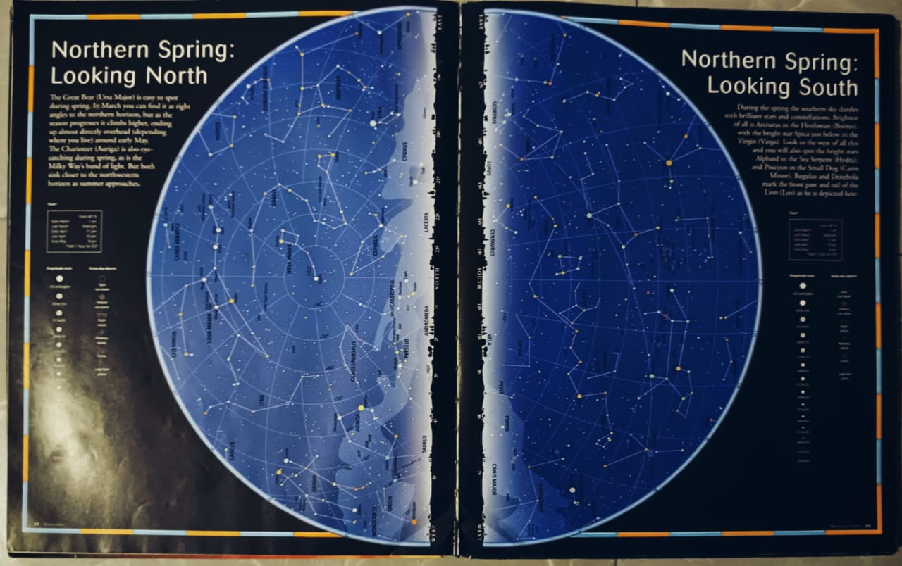
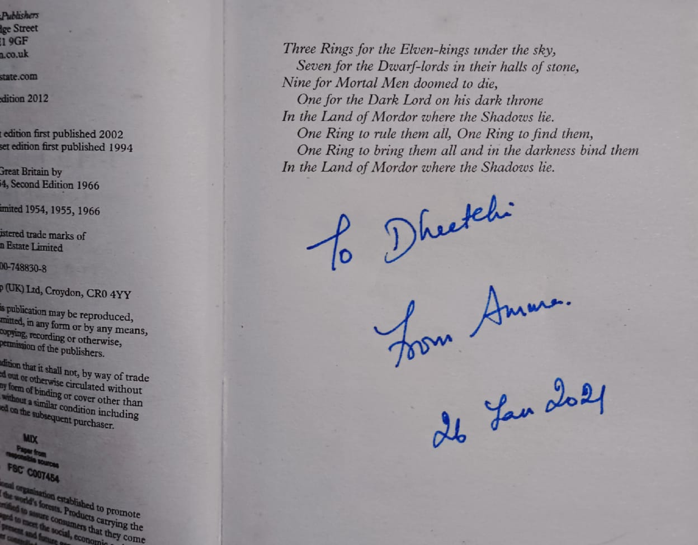

"A Splash of Color and Nostalgia" – This vibrant illustration from a Thea Stilton book takes me right back to middle school. The colorful pages of stories like these made me fall in love with reading, turning every book into an adventure.

"Maps, Magic, and Middle-earth" – The map from The Lord of the Rings (found at the back of the book) is a reminder that even though I no longer read illustrated children’s books, details like this still captivate me. There’s something timeless about tracing Tolkien’s world with my fingertips.

"Costumes of the Final Frontier" – A fascinating glimpse into Star Trek costume design from an old, second-hand treasure: Star Trek Guide. Even beyond the show itself, the creativity behind the sci-fi aesthetic is just as thrilling to explore.

"The Stars in My Hands" – A breathtaking constellation map from Our Universe, stretching across two pages, marked “Northern Spring Looking North.” There’s something humbling about seeing the vastness of space laid out in ink, like holding the night sky in a book.

"A Gift in Every Word" – The first page of one of my books holds something even more special than the story inside: "To Dheetchi, From Amma – 26 Jan 2021." A reminder that every book is more than just pages—it’s a gift, a memory, a little piece of love.